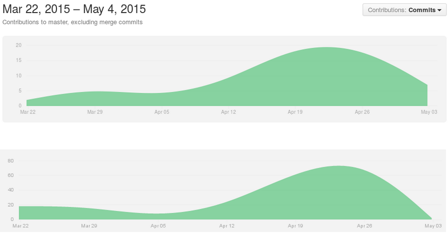

A virtual torch-passing application that aims to create a global interconnected community around the adventure of meeting like-minded travelers and watching a piece of your identity travel around the world.
Our Story
Patrick, Byron, Andrew, and I came together to work as a team for our final Software Design project. From the beginning we wanted our project to be implemented similarly to an actual application such as Twitter or Facebook. We aimed to create a full-stack implementation of an Android-interfacing application, with industrial grade database software and a software stack that represents how projects are done in the real world. We also wanted to emulate how they do it, and we used (mostly) good git practices such as pull requests and branches, and used an agile workflow with Trello. We split up the work, with Patrick and Andrew on the Android application and networking side of things, while Byron and I handled the server and website. At our meetings, we updated each other on progress and shared what we learned.
{kind=link}
Over time, our project evolved into something we really cared about. We became more excited by potential additional features as we continued development. Through design reviews, various ideas for features such as usernames and torch statistics popped up. These reviews were also helpful for ideating a lot on the user interface for the website and the Android app. The combination of these features and updated UI turned the project from something that was simply a class project into something that we were really excited about. Overall, we learned a lot from each other and created an awesome full-stack application.
{kind=link}
As we became more excited, we began implementing more features, as seen through our git commits.
 Top: Android app repository commits; Bottom: Server repository commits
How it Works
Implementation Information
- Two NFC-equipped Android phones with Kyzr installed bump each other
- User A taps their screen to swap torches with User B
- User B’s phone now holds its original ID and User A’s ID
- User B’s phone contacts the server, which tells the database that these two phones have switched IDs
- The server also adds information to each user’s database entry about the transaction such as latitude and longitude
- User A and B go to the website and enter their IDs (or usernames!)
- The server retrieves all of their transactions from the database, and displays it on a map along with statistics about each user’s torch!
On the Server Side
Our server was a full-stack implementation of a LAMP server setup, which ran Debian 7, Apache server, MongoDB and Python-Flask.
For mapping the travel of the torch we used Google Maps API, with on-the-fly javascript for specific queries.
Updating the database is done via POST requests.
Project Resources
Repositories
Server GitHub | Android GitHubDocuments
The Project Proposal | Design Review Slides | Code Review Slides | Final Presentation PosterSprint Schedule
- Sprint 1 - 4/1
- Sprint 2 - 4/8
- Sprint 3 - 4/15
- Sprint 4 - 4/22
- Sprint 5 - 4/29
External Resources
- PyMongo
- MongoDB
- Python-Flask
- Apache2-server
- Google Maps API
- Google styling
- Floating Action Button Library
- Material Design